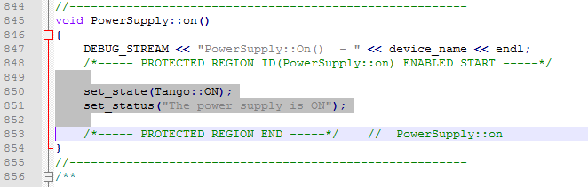

Generated files¶
- The source code will not be read when you re-open your project. Only the .xmi will be re-loaded.
- Your own code must be added only between specific tags: On following example, only the grey part will not be overwritten at next code generation.

Generated code:¶
C++ Generated files¶
If no inheritance has been specified, the generated classes will inherit from Device_4Impl (Tango-7.x.x or above).
The generated code structure will look like to the Pogo-6 code.
|
Containing created class data members and prototypes. |
|
Containing created class methods for init, commands, read/write attributes, ….. |
|
Containing data members and prototypes for MyObjectClass.cpp. Containing also the Command and Attribute class definitions. |
|
A singleton class derived from DeviceClass. It implements the command and attribute lists and all properties and methods required by the created class once per process. |
|
Containing created class methods for the state machine. |
|
Containing created class methods creating used class. In case of multi class server, add other class(es) in the factory. |
|
Start point of the device server. Most of the time, not touched by the programmer. |
- A method called
add_dynamic_attributes()has been added to theMyObject.cpp. It will be called at startup to create dynamic attributes if any. .. warning:: It is NOT generated if the class is abstract !
Python Generated files¶
If no inheritance has been specified,
the generated classes will inherit from Device_4Impl (Tango-7.x.x or above).
The generated code structure will look like to the Pogo-6 code.
The python templates have been implemented by Sebastien Gara at Nexeya
MyObject.py |
Containing created class python code. |
Java Generated files¶
The generated Java classes are not compatible with the server API from TangORB.
They are compatible only with the new design from Gwenaelle Abeille at Soleil. See Java servers
org.tango.myobject.MyObject.java |
Containing created class java code. |
org.tango.myobject.MyDynamicAttribute.java |
Containing created java code for dynamic attribute class if any. |
Projects:¶
pom.xml (MAVEN) file¶
- Pom.xml is MAVEN project file. It can be loaded as project by IDE (like IntellijIDEA).
- To generate this file, you must generate the xmi file in a path like ../../src/main/java
Windows project files¶
Pogo supports Visual C++ projects.
It will generate files in a directory name vcxx_proj (where xx is the Visual C release. e.g. vc12_proj)
Projects use the TANGO_ROOT environment variable to find include and library files.
It provides 64 bits and debug/release modes for each solution.
In this directory 5 files are generated:
|
Global solution project |
|
|
|
Project to create a dynamic-link library for the class |
|
Project to create a static server (using static library) |
|
Project to create a dynamic server (using dll) |